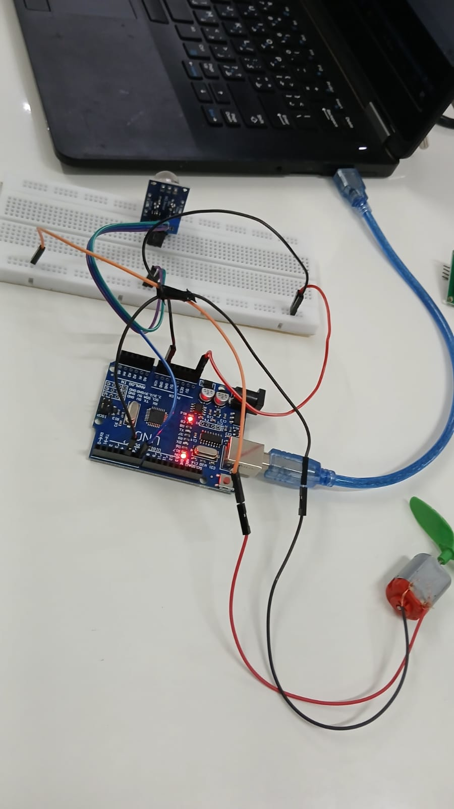

The Gas Leakage Detection System works using an MQ-2 gas sensor connected to an Arduino microcontroller. The MQ-2 sensor continuously monitors the surrounding air for gases such as LPG, methane, and smoke. When gas is detected, the sensor produces an analog signal which is sent to the Arduino.
The Arduino reads the sensor value and compares it with a predefined threshold level. If the gas concentration exceeds the threshold, the system identifies it as a gas leakage condition and activates safety devices.
When gas leakage is detected, the Arduino activates a buzzer to alert people nearby. At the same time, a DC motor fan can be turned on to help remove the leaked gas from the surrounding area. This helps prevent dangerous situations such as fire or explosions.
